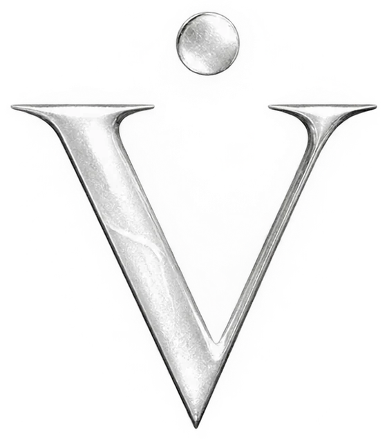
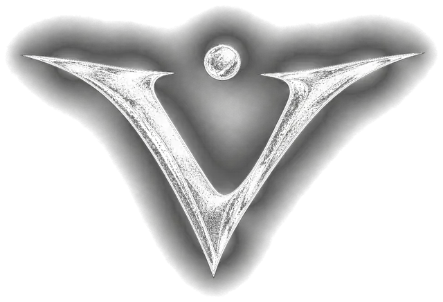

Signature Sweatshirt – Beyaz
₺1.299
Gardırobunuzun en temel ve vazgeçilmez parçası olmaya aday! Yüksek kaliteli kumaş yapısı ve rahat oversize kesimiyle öne çıkan bu sweatshirt, minimalist tarzı benimseyenler için özel olarak tasarlandı.
Satın Al
Zamansız Lüksün İmzası. Seçkin kumaşlar, sınırlı üretim, kusursuz işçilik.
Koleksiyonu Keşfet
Şehrin ritmi, VAĖLO kalitesi.
Seriyi KeşfetKaban, trençkot ve trikoyla kışın sade lüksü. 799 TL’den başlayan fiyatlarla.
Zamansız zarafet, bileğinde. Günlük, Signature ve Kadın serilerinde 4.150 TL’den başlayan fiyatlarla.
Aynı seriden istediğin 3 parçayı (renk ve beden serbest) sepete ekle, paket fiyatı otomatik uygulanır.
Ürünler sana özel üretilir · teslim ortalama 3–7 iş günü
380 GSM şardonlu pamuk, oversize kesim ve sade bir imza. Kaydırın, koleksiyonu tek tek görün.
Siyah — Sessiz lüksün en saf hâli.
380 GSM şardonlu pamuk · Oversize
1.299 TL İnceleSınırlı sayıda üretilen, özenle tasarlanmış kapşonlu sweatshirt, sweatshirt ve tişörtler.
₺1.299
Gardırobunuzun en temel ve vazgeçilmez parçası olmaya aday! Yüksek kaliteli kumaş yapısı ve rahat oversize kesimiyle öne çıkan bu sweatshirt, minimalist tarzı benimseyenler için özel olarak tasarlandı.
Satın Al₺1.299
Gardırobunuzun en temel ve vazgeçilmez parçası olmaya aday! Yüksek kaliteli kumaş yapısı ve rahat oversize kesimiyle öne çıkan bu sweatshirt, minimalist tarzı benimseyenler için özel olarak tasarlandı.
Satın Al₺1.299
Gardırobunuzun en temel ve vazgeçilmez parçası olmaya aday! Yüksek kaliteli kumaş yapısı ve rahat oversize kesimiyle öne çıkan bu sweatshirt, minimalist tarzı benimseyenler için özel olarak tasarlandı.
Satın Al₺899
Gardırobunuzun en temel ve vazgeçilmez parçası olmaya aday! Yüksek kaliteli kumaş yapısı ve rahat oversize kesimiyle öne çıkan bu düz beyaz tişört, minimalist tarzı benimseyenler için özel olarak tasarlandı.
Satın Al₺899
Gardırobunuzun en temel ve vazgeçilmez parçası olmaya aday! Yüksek kaliteli kumaş yapısı ve rahat oversize kesimiyle öne çıkan bu düz siyah tişört, minimalist tarzı benimseyenler için özel olarak tasarlandı.
Satın Al₺1.299
Kumaş Tipi: %100 Yüksek Gramajlı Şardonlu Pamuk (380 GSM - Heavyweight) Doku: Dış yüzeyi pürüzsüz ve yumuşak touch, iç yüzeyi ekstra sıcak tutan fırçalanmış doku
Satın Al₺1.299
Kumaş Tipi: %100 Yüksek Gramajlı Şardonlu Pamuk (380 GSM - Heavyweight) Doku: Dış yüzeyi pürüzsüz ve yumuşak touch, iç yüzeyi ekstra sıcak tutan fırçalanmış doku
Satın Al₺1.299
Kumaş Tipi: %100 Yüksek Gramajlı Şardonlu Pamuk (380 GSM - Heavyweight) Doku: Dış yüzeyi pürüzsüz ve yumuşak touch, iç yüzeyi ekstra sıcak tutan fırçalanmış doku
Satın AlÖnde sade imza, arkada şehrin manifestosu. Kaydırın, seriyi tek tek görün.
Siyah · Etiket Logo — Önde sade imza, arkada şehrin manifestosu.
380 GSM şardonlu pamuk · Oversize
1.399 TL İnceleŞehrin ritmini VAĖLO kalitesiyle buluşturan oversize kapşonlu sweatshirt (hoodie) ve grafik baskılı tişört serisi.
₺1.399
Kumaş Tipi: %100 Yüksek Gramajlı Şardonlu Pamuk (380 GSM - Heavyweight) Doku: Dış yüzeyi pürüzsüz ve yumuşak touch, iç yüzeyi ekstra sıcak tutan fırçalanmış (şardonlu) doku
Satın Al₺899
Gardırobunuzun en temel ve vazgeçilmez parçası olmaya aday! Yüksek kaliteli kumaş yapısı ve rahat oversize kesimiyle öne çıkan bu grafik baskılı beyaz tişört, minimalist tarzı benimseyenler için özel olarak tasarlandı. Hem günlük kombinlerinizde hem de seçkin gardırobunuzda zahmetsiz bir zarafet sunar. Kesim / Kalıp: Unisex Oversize Fit (Rahat & Dökümlü Kesim)
Satın Al₺1.399
Kumaş Tipi: %100 Yüksek Gramajlı Şardonlu Pamuk (380 GSM - Heavyweight) Doku: Dış yüzeyi pürüzsüz ve yumuşak touch, iç yüzeyi ekstra sıcak tutan fırçalanmış (şardonlu) doku
Satın Al₺1.399
Kumaş Tipi: %100 Yüksek Gramajlı Şardonlu Pamuk (380 GSM - Heavyweight) Doku: Dış yüzeyi pürüzsüz ve yumuşak touch, iç yüzeyi ekstra sıcak tutan fırçalanmış (şardonlu) doku
Satın Al₺899
Gardırobunuzun en temel ve vazgeçilmez parçası olmaya aday! Yüksek kaliteli kumaş yapısı ve rahat oversize kesimiyle öne çıkan bu V logo baskılı siyah tişört, minimalist tarzı benimseyenler için özel olarak tasarlandı. Hem günlük kombinlerinizde hem de seçkin gardırobunuzda zahmetsiz bir zarafet sunar. Kesim / Kalıp: Unisex Oversize Fit (Rahat & Dökümlü Kesim)
Satın Al₺1.399
Kumaş Tipi: %100 Yüksek Gramajlı Şardonlu Pamuk (380 GSM - Heavyweight) Doku: Dış yüzeyi pürüzsüz ve yumuşak touch, iç yüzeyi ekstra sıcak tutan fırçalanmış (şardonlu) doku
Satın Al₺1.399
Kumaş Tipi: %100 Yüksek Gramajlı Şardonlu Pamuk (380 GSM - Heavyweight). Old money ve streetwear estetiğinde düşük omuzlu oversize kesim, çift katlı kapüşon, metal uçlu lüks bağcıklar ve güçlendirilmiş fitilli kol ağızları.
Satın Al₺899
Yüksek kaliteli, %100 premium pamuktan üretilen oversize tişört. Günlük ve sokak stiline uygun unisex kesim, göğüste minimalist lüks detay ve dayanıklı fitilli yaka.
Satın Al₺1.399
Kumaş Tipi: %100 Yüksek Gramajlı Şardonlu Pamuk (380 GSM - Heavyweight). Old money ve streetwear estetiğinde düşük omuzlu oversize kesim, çift katlı yapılandırılmış kapüşon, mat metal uçlu lüks bağcıklar ve güçlendirilmiş fitilli kol ağızları.
Satın AlGünlük, Signature ve Kadın serileriyle zamanın sessiz lüksü. Saatler özel üretimdir; teslimat süresi 7-15 iş günüdür.
₺4.199
Dalgıç saat çizgisinde, çevrilebilir görünümlü bezeli sportif bir duruş. Güçlü karakteri ve kolay okunan kadranıyla gündüzden geceye her kombine eşlik eder.
Satın Al₺7.800
Sade ve zamansız bir çizgi; kadranın rengi tüm hikâyeyi anlatıyor. Günlük kullanımda şık, takım elbisede zarif duran, her gardıropla uyumlu bir saat.
Satın Al₺5.349
Sade ve zamansız bir çizgi; kadranın rengi tüm hikâyeyi anlatıyor. Günlük kullanımda şık, takım elbisede zarif duran, her gardıropla uyumlu bir saat.
Satın Al₺8.290
Sade ve zamansız bir çizgi; kadranın rengi tüm hikâyeyi anlatıyor. Günlük kullanımda şık, takım elbisede zarif duran, her gardıropla uyumlu bir saat.
Satın Al₺8.300
Sade ve zamansız bir çizgi; kadranın rengi tüm hikâyeyi anlatıyor. Günlük kullanımda şık, takım elbisede zarif duran, her gardıropla uyumlu bir saat.
Satın Al₺7.700
Tırtıklı (fluted) bezel ve jübile bileklikle klasik lüks saat çizgisinden ilham alan bir model. Işığı yakalayan bezeli ve ışıltılı kadranıyla bileğinizde fark edilir bir imza bırakır.
Satın Al₺6.100
Tırtıklı (fluted) bezel ve jübile bileklikle klasik lüks saat çizgisinden ilham alan bir model. Işığı yakalayan bezeli ve ışıltılı kadranıyla bileğinizde fark edilir bir imza bırakır.
Satın Al₺5.100
Tırtıklı (fluted) bezel ve jübile bileklikle klasik lüks saat çizgisinden ilham alan bir model. Işığı yakalayan bezeli ve ışıltılı kadranıyla bileğinizde fark edilir bir imza bırakır.
Satın Al₺4.199
Dalgıç saat çizgisinde, çevrilebilir görünümlü bezeli sportif bir duruş. Güçlü karakteri ve kolay okunan kadranıyla gündüzden geceye her kombine eşlik eder.
Satın Al₺4.150
Dalgıç saat çizgisinde, çevrilebilir görünümlü bezeli sportif bir duruş. Güçlü karakteri ve kolay okunan kadranıyla gündüzden geceye her kombine eşlik eder.
Satın Al₺6.649
Dalgıç saat çizgisinde, çevrilebilir görünümlü bezeli sportif bir duruş. Güçlü karakteri ve kolay okunan kadranıyla gündüzden geceye her kombine eşlik eder.
Satın Al₺6.299
Sade ve zamansız bir çizgi; kadranın rengi tüm hikâyeyi anlatıyor. Günlük kullanımda şık, takım elbisede zarif duran, her gardıropla uyumlu bir saat.
Satın Al₺7.050
Sade ve zamansız bir çizgi; kadranın rengi tüm hikâyeyi anlatıyor. Günlük kullanımda şık, takım elbisede zarif duran, her gardıropla uyumlu bir saat.
Satın Al₺4.199
Tırtıklı (fluted) bezel ve jübile bileklikle klasik lüks saat çizgisinden ilham alan bir model. Işığı yakalayan bezeli ve ışıltılı kadranıyla bileğinizde fark edilir bir imza bırakır.
Satın Al₺4.199
Tırtıklı (fluted) bezel ve jübile bileklikle klasik lüks saat çizgisinden ilham alan bir model. Işığı yakalayan bezeli ve ışıltılı kadranıyla bileğinizde fark edilir bir imza bırakır.
Satın Al₺4.350
Sade ve zamansız bir çizgi; kadranın rengi tüm hikâyeyi anlatıyor. Günlük kullanımda şık, takım elbisede zarif duran, her gardıropla uyumlu bir saat.
Satın Al₺7.549
Sade ve zamansız bir çizgi; kadranın rengi tüm hikâyeyi anlatıyor. Günlük kullanımda şık, takım elbisede zarif duran, her gardıropla uyumlu bir saat.
Satın Al₺8.399
Tırtıklı (fluted) bezel ve jübile bileklikle klasik lüks saat çizgisinden ilham alan bir model. Işığı yakalayan bezeli ve ışıltılı kadranıyla bileğinizde fark edilir bir imza bırakır.
Satın Al₺7.099
Tırtıklı (fluted) bezel ve jübile bileklikle klasik lüks saat çizgisinden ilham alan bir model. Işığı yakalayan bezeli ve ışıltılı kadranıyla bileğinizde fark edilir bir imza bırakır.
Satın Al₺7.300
Sade ve zamansız bir çizgi; kadranın rengi tüm hikâyeyi anlatıyor. Günlük kullanımda şık, takım elbisede zarif duran, her gardıropla uyumlu bir saat.
Satın Al₺8.300
Sade ve zamansız bir çizgi; kadranın rengi tüm hikâyeyi anlatıyor. Günlük kullanımda şık, takım elbisede zarif duran, her gardıropla uyumlu bir saat.
Satın Al₺5.390
Sade ve zamansız bir çizgi; kadranın rengi tüm hikâyeyi anlatıyor. Günlük kullanımda şık, takım elbisede zarif duran, her gardıropla uyumlu bir saat.
Satın Al₺8.490
Sade ve zamansız bir çizgi; kadranın rengi tüm hikâyeyi anlatıyor. Günlük kullanımda şık, takım elbisede zarif duran, her gardıropla uyumlu bir saat.
Satın Al₺4.350
Sade, mat ve modern; gün ve tarih göstergeli siyah silikon kordonlu saat. Hafif ve rahat yapısıyla günün her saatinde unutulmayacak kadar rahat bir seçim.
Satın Al₺8.290
Sekizgen (octagonal) kasa ve renkli silikon kordonla modern, sportif bir tasarım. Fırçalı çelik çerçeve ile canlı kordon rengi birleşince günlük kombinlere taze bir dokunuş katar.
Satın Al₺7.900
Sekizgen (octagonal) kasa ve renkli silikon kordonla modern, sportif bir tasarım. Fırçalı çelik çerçeve ile canlı kordon rengi birleşince günlük kombinlere taze bir dokunuş katar.
Satın Al₺6.049
Sekizgen (octagonal) kasa ve renkli silikon kordonla modern, sportif bir tasarım. Fırçalı çelik çerçeve ile canlı kordon rengi birleşince günlük kombinlere taze bir dokunuş katar.
Satın Al₺7.950
Çelik ve altın rengi bileklikte, kadranıyla öne çıkan iki tonlu bir şıklık. Gün içinde de akşam davetinde de görünür olmak isteyenler için tasarlandı.
Satın Al₺7.390
Çelik ve altın rengi iki tonlu bileklik ile tırtıklı altın rengi bezeli, gösterişli bir model. Kadranın renk derinliği altın detaylarla birleşince saat gerçek bir statü parçasına dönüşür.
Satın Al₺7.749
Çelik ve altın rengi bileklikte, kadranıyla öne çıkan iki tonlu bir şıklık. Gün içinde de akşam davetinde de görünür olmak isteyenler için tasarlandı.
Satın Al₺7.550
Çelik ve altın rengi iki tonlu bileklik ile tırtıklı altın rengi bezeli, gösterişli bir model. Kadranın renk derinliği altın detaylarla birleşince saat gerçek bir statü parçasına dönüşür.
Satın Al₺8.199
Baştan sona altın rengi gövde ve yeşil bezelle, koleksiyonun en gösterişli dalgıç modeli. Parlak altın yüzeyi ve derin yeşil kadranıyla dikkat çekmek isteyenlerin tercihi.
Satın Al₺7.250
Gül altın tonlu detaylar ve çoklu alt kadranlarla sportif bir kronograf görünümü. Siyah kadranı ve sıcak gül altın vurgularıyla hem sportif hem lüks bir ifade sunar.
Satın Al₺8.150
Kahverengi deri kordonlu, sportif kronograf görünümlü güçlü bir model. Rakamlı dış skalası ve alt kadranlarıyla çarpıcı bir duruş; deri kordon sıcak bir tamamlayıcı.
Satın Al₺7.790
Tamamı siyah kaplamalı, tırtıklı bezelli, gizemli ve güçlü bir model. Siyah üstüne altın rengi indeksler; karanlık ama gösterişli bir stil arayanlar için.
Satın Al₺5.999
İki renkli bezeli GMT tarzı dizayn; saat dilimi çizgisinden gelen güçlü bir karakter. Renkli 24 saat bezeli ve koyu kadranıyla koleksiyonun en iddialı sportif modellerinden biri.
Satın Al₺4.150
İki renkli bezeli GMT tarzı dizayn; saat dilimi çizgisinden gelen güçlü bir karakter. Renkli 24 saat bezeli ve koyu kadranıyla koleksiyonun en iddialı sportif modellerinden biri.
Satın Al₺5.650
İki renkli bezeli GMT tarzı dizayn; saat dilimi çizgisinden gelen güçlü bir karakter. Renkli 24 saat bezeli ve koyu kadranıyla koleksiyonun en iddialı sportif modellerinden biri.
Satın Al₺7.500
İki renkli bezeli GMT tarzı dizayn; saat dilimi çizgisinden gelen güçlü bir karakter. Renkli 24 saat bezeli ve koyu kadranıyla koleksiyonun en iddialı sportif modellerinden biri.
Satın Al₺6.949
İki renkli bezeli GMT tarzı dizayn; saat dilimi çizgisinden gelen güçlü bir karakter. Renkli 24 saat bezeli ve koyu kadranıyla koleksiyonun en iddialı sportif modellerinden biri.
Satın Al₺7.790
İki renkli bezeli GMT tarzı dizayn; saat dilimi çizgisinden gelen güçlü bir karakter. Renkli 24 saat bezeli ve koyu kadranıyla koleksiyonun en iddialı sportif modellerinden biri.
Satın Al₺7.890
Tamamı beyaz, sekizgen formlu, minimal ve cesur bir saat. Sade rakamlı kadranı ve bütünleşik bilekliğiyle çağdaş bir ifade; beyaz kombinlerin tamamlayıcısı.
Satın Al₺4.899
Mat siyah, bütünleşik kasa-bileklik tasarımıyla modern ve karakterli bir model. Gizemli duruşu ve düz kadranıyla sokak stilini lüks bir seviyeye taşır.
Satın Al₺4.490
Sekizgen taş detaylı bileklik ve altın rengi kasayla, takı gibi duran zarif bir saat. Küçük kasası ve ışıltılı taşları ile hem bir saat hem bir mücevher; hediye için de ideal.
Satın Al₺4.490
Sekizgen taş detaylı bileklik ve altın rengi kasayla, takı gibi duran zarif bir saat. Küçük kasası ve ışıltılı taşları ile hem bir saat hem bir mücevher; hediye için de ideal.
Satın Al₺6.390
Sekizgen taş detaylı bileklik ve altın rengi kasayla, takı gibi duran zarif bir saat. Küçük kasası ve ışıltılı taşları ile hem bir saat hem bir mücevher; hediye için de ideal.
Satın Al₺7.350
Sekizgen taş detaylı bileklik ve altın rengi kasayla, takı gibi duran zarif bir saat. Küçük kasası ve ışıltılı taşları ile hem bir saat hem bir mücevher; hediye için de ideal.
Satın Al₺5.050
Sekizgen taş detaylı bileklik ve altın rengi kasayla, takı gibi duran zarif bir saat. Küçük kasası ve ışıltılı taşları ile hem bir saat hem bir mücevher; hediye için de ideal.
Satın Al₺7.899
Sekizgen taş detaylı bileklik ve altın rengi kasayla, takı gibi duran zarif bir saat. Küçük kasası ve ışıltılı taşları ile hem bir saat hem bir mücevher; hediye için de ideal.
Satın Al₺5.850
Sekizgen taş detaylı bileklik ve altın rengi kasayla, takı gibi duran zarif bir saat. Küçük kasası ve ışıltılı taşları ile hem bir saat hem bir mücevher; hediye için de ideal.
Satın Al₺5.590
Sekizgen taş detaylı bileklik ve altın rengi kasayla, takı gibi duran zarif bir saat. Küçük kasası ve ışıltılı taşları ile hem bir saat hem bir mücevher; hediye için de ideal.
Satın Al₺5.200
Lila kadranıyla zarif, ince çizgili ve kadın bileğine uyumlu bir model. Pastel tonu ve parlak çelik bilekliğiyle günlük şıklığı tamamlayan, narin bir tasarım.
Satın AlTüm siparişlerde kargo ücretsizdir. Saatler özel üretimdir; teslimat süresi 7-15 iş günüdür. 7 gün iade, iade kargosu bizden.
Kaban, trençkot, triko ve kışlık parçalarla sezonun sade lüksü. Siparişler 2-4 iş günü içinde kargoya verilir.
Tüm siparişlerde kargo ücretsizdir. Siparişler 2-4 iş günü içinde kargoya verilir. 7 gün iade ve beden değişimi, iade kargosu bizden.
VAĖLO, sadelikten ve işçilikten doğdu. Her parça, uzun yıllar yanınızda kalacak şekilde tasarlanır. Bizim için lüks, gösteriş değil; ayrıntıdır.
Sade zarafeti, modern çizgileri ve özgün tasarımları yüksek kaliteli kumaş ve materyallerle buluşturmak; müşterilerimize sadece giyim ve aksesuar değil, kendi tarzlarını özgürce ifade edebilecekleri güçlü bir kimlik sunmaktır. E-ticarette güvenilir, hızlı ve müşteri odaklı bir alışveriş deneyimi sağlayarak günlük yaşamda şıklığı ve konforu bir arada sunmayı amaçlıyoruz.
Özgün tasarım dili ve dinamik koleksiyonlarıyla premium giyim modası ve aksesuar segmentinde öncü bir marka haline gelmek; hem yerel hem de uluslararası pazarda tarz sahibi bireylerin ilk tercih ettiği global bir yaşam tarzı (lifestyle) markası olmaktır.
Yakında: çanta ve parfüm.
%100 pamuk · 3 iplik şardonlu kumaş
| Beden | Göğüs genişliği | Boy uzunluğu |
|---|---|---|
| S | 57 cm | 71 cm |
| M | 60 cm | 73 cm |
| L | 63 cm | 75 cm |
| XL | 66 cm | 76 cm |
| XXL | 69 cm | 78 cm |
%100 pamuk · 24/1 kumaş
| Beden | Göğüs genişliği | Boy uzunluğu |
|---|---|---|
| S | 55 cm | 71 cm |
| M | 56 cm | 73 cm |
| L | 59 cm | 75 cm |
| XL | 61 cm | 76 cm |
| XXL | 63 cm | 78 cm |
Ölçüler ürün düz bir zemine serildiğinde alınmıştır. Göğüs: koltuk altından koltuk altına · Boy: omuzdan etek ucuna. Kendi bedeninizi tercih edebilirsiniz; daha bol bir görünüm için bir beden büyük seçmenizi öneririz. Ölçülerde ±1–2 cm farklılık olabilir.
Yeni koleksiyonlardan ve kampanyalardan ilk sen haberdar ol.